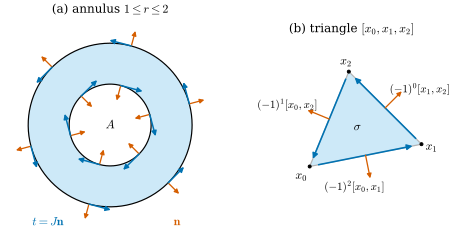
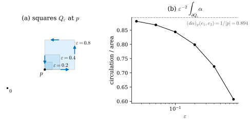
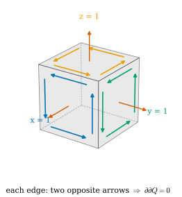

35.4 Stokes's Theorem
Goals
- boundary에 주는 orientation(outward normal first)을 정하고, simplex에서는 그것이 조합적 규칙 \(\partial[v_0, \dots, v_k] = \sum_m(-1)^m[v_0, \dots, \widehat{v_m}, \dots, v_k]\)과 같음을 증명할 수 있다.
- Stokes's theorem \(\int_M d\alpha = \int_{\partial M}\alpha\)를 진술하고, curve, box, standard simplex, 매개화된 surface 조각(특히 triangle)에서 완전한 증명을 쓸 수 있다.
- Green's theorem, divergence theorem, classical Stokes theorem을 특수한 경우로 유도하고 각각의 orientation이 맞는지 확인할 수 있다.
- \(d\alpha\)를 “작은 고리를 도는 양 ÷ 넓이”로 해석하고, \(d\circ d = 0\)을 \(\partial\partial = \emptyset\)로 설명할 수 있다.
Prerequisites
Motivation
Section 35.3의 예들에는 설명하지 않은 일치가 있었다. unit circle을 도는 \(x\,dy\)의 적분은 \(\pi\)로 unit disk의 넓이였고, ellipse를 도는 \(\tfrac12(x\,dy - y\,dx)\)의 적분 \(2\pi\)는 ellipse가 둘러싼 넓이였다(Exercise 35.3.1). 원 위의 Riemann sum \(S_n\)은 내접 정 \(n\)각형의 넓이였다. 반면 \(d\theta\)는 원점 둘레를 돌면 \(2\pi\)를 냈다. 모두 “boundary 위의 적분이 안쪽의 무언가를 안다”는 현상이다.
1차원에서는 이미 알고 있다. 미적분학의 기본정리 \(\int_a^bf'(t)\,dt = f(b) - f(a)\)는 구간 안에서의 변화율을 모두 더하면 끝점의 값 차이가 된다는 정리다. 이 절의 Stokes's theorem은 이것을 모든 차원으로 넓힌다. 안쪽에서 \(d\alpha\)를 적분한 값은 boundary에서 \(\alpha\)를 적분한 값과 같다. 이 정리에는 boundary의 orientation이 필요하므로 그것부터 정한다.
Boundaries and Their Orientation
구간 \([a, b]\)의 boundary는 끝점 \(a, b\)이고, disk의 boundary는 원, box의 boundary는 \(2n\)개의 면, \(k\)-simplex의 boundary는 \(k + 1\)개의 면이다. 이 절에서 쓰는 “\(k\)차원 조각”은 이런 것들과 그 매개화된 상(\(\R^N\) 안의 curve 조각, surface 조각)이다. 정확한 틀인 manifold with boundary는 Section 11.5에 있다. boundary point \(p\)에서 조각의 tangent space(\(k\)차원 \(\R^k\), 또는 매개화의 편미분이 펼치는 공간)를 생각하자. boundary가 매끄러운 점에서는 boundary의 tangent space가 그 안의 \((k-1)\)차원 subspace이고, 그 subspace를 벗어나 조각의 바깥을 향하는 vector가 있다. 이것을 outward vector라 부른다.
Definition 35.4.1 (Stokes orientation). \(M\)이 orientation이 있는 \(k\)차원 조각(\(k \ge 2\))이고 \(p\)가 boundary가 매끄러운 boundary point, \(\mathbf{n}\)이 \(p\)에서의 outward vector라 하자. boundary의 tangent space의 ordered basis \((w_1, \dots, w_{k-1})\)가 positively oriented라는 것을 \((\mathbf{n}, w_1, \dots, w_{k-1})\)가 \(M\)의 orientation에 대해 positively oriented라는 것으로 정한다. \(k = 1\)이면 boundary는 점이고, 조각의 방향으로 진행하는 쪽의 끝점에 \(+\), 반대쪽 끝점에 \(-\)를 준다: \(\partial[a, b] = [b] - [a]\).
이것이 Stokes orientation(스토크스 방향)이다(정본은 Section 18.2, 규약은 Notation and Conventions의 “outward normal first”). outward vector를 다른 것 \(\mathbf{n}'\)으로 바꾸어도 결과는 같다. \(\mathbf{n}' = c\,\mathbf{n} + w\)(\(c \gt 0\), \(w\)는 boundary의 tangent)로 쓰면 determinant에서 \(w\)의 몫이 사라지고 \(c \gt 0\)만 곱해지기 때문이다. 그래서 inner product 없이도 정해지지만, 그림에서는 수직인 outward normal을 쓰면 편하다.
Example 35.4.2 (boundary orientations).
- (a) curve \(\gamma\colon [a, b] \to \R^N\)의 boundary는 \([\gamma(b)] - [\gamma(a)]\)이다(Remark 35.3.14의 형식적 합).
- (b) \(\R^2\)의 영역 \(D\)(standard orientation): unit vector \(\mathbf{n}\), \(t\)가 수직일 때 \(\det(\mathbf{n}, t) \gt 0\)인 것은 \(t = J\mathbf{n}\)(\(\mathbf{n}\)을 \(+90^\circ\) 돌린 것)일 때뿐이다. 이때 \(Jt = -\mathbf{n}\)은 안쪽을 향하므로, Stokes orientation은 “\(D\)를 진행 방향의 왼쪽에 두고 도는 것”이다. 바깥 boundary는 반시계 방향, 구멍의 boundary는 시계 방향이다. 이것이 Theorem 2.6.13(Green's theorem)의 “positively oriented”와 정확히 같다.
- (c) \(\R^3\)의 영역: \(\det(\mathbf{n}, w_1, w_2) = \inner{\mathbf{n}}{w_1\times w_2}\)이므로 \((w_1, w_2)\)가 positively oriented인 것은 \(w_1\times w_2\)가 바깥을 향하는 것이다. boundary 조각을 \(\mathbf{x}(u, v)\)로 매개화할 때 \(\mathbf{x}_u\times\mathbf{x}_v\)가 바깥을 향하게 고르면 된다.
- (d) \(\R^3\)의 surface 조각이 unit normal \(\mathbf{N}\)으로 orientation을 가지면(tangent plane의 basis \((w_1, w_2)\)가 positive ⇔ \(\det(\mathbf{N}, w_1, w_2) \gt 0\)), boundary의 진행 방향 \(t\)는 surface 안의 outward vector \(\nu\)에 대해 \(\det(\mathbf{N}, \nu, t) \gt 0\), 곧 \(t\)가 \(\mathbf{N}\times\nu\) 쪽인 방향이다. \(\mathbf{N}\)을 엄지로 한 오른손이 감는 방향이다.
Figure 35.4.1의 (a)는 annulus \(A = \{1 \le r \le 2\}\)에서 (b)를 그린 것이다. 주홍 화살표가 outward normal \(\mathbf{n}\)이다. 바깥 원에서는 원점에서 멀어지고, 안쪽 원에서는 원점을 향한다. 안쪽 원의 바깥이 annulus의 바깥이기 때문이다. 파란 화살표 \(t = J\mathbf{n}\)이 Stokes orientation이다. 바깥 원은 반시계 방향, 안쪽 원은 시계 방향으로 돌고, 어느 쪽이든 하늘색 영역이 진행 방향의 왼쪽에 있다. (b)는 triangle에서 같은 규칙을 쓴 것이고, 다음 명제의 내용이다.

box의 면에는 남은 좌표를 증가하는 순서로 쓴 매개화가 있다. \(Q = [a_1, b_1]\times\cdots\times[a_n, b_n]\)의 면 \(F_i^+ = \{x^i = b_i\}\)와 \(F_i^- = \{x^i = a_i\}\)를 \(\psi_i^\pm(x^1, \dots, \widehat{x^i}, \dots, x^n) = (x^1, \dots, x^i = b_i\text{ or }a_i, \dots, x^n)\)으로 매개화하면 편미분 vector는 \(e_1, \dots, \widehat{e_i}, \dots, e_n\)이다.
Proposition 35.4.3 (faces of a box). \(Q\)에 standard orientation을 주면 \(\psi_i^+\)는 \(F_i^+\)의 Stokes orientation에 부호 \((-1)^{i-1}\)를, \(\psi_i^-\)는 \(F_i^-\)의 Stokes orientation에 부호 \((-1)^i\)를 곱한 것이다. 따라서
이다.
Proof. \(F_i^+\)의 outward vector는 \(e_i\)이고, \(e_i\)를 첫 자리에서 \(i\)번째 자리로 옮기면 \(\det(e_i, e_1, \dots, \widehat{e_i}, \dots, e_n) = (-1)^{i-1}\det I_n = (-1)^{i-1}\)이다. \(F_i^-\)의 outward vector는 \(-e_i\)이므로 부호가 하나 더 바뀐다. 각 면 위의 적분은 orientation에 부호를 곱하면 부호만 바뀐다(Proposition 35.3.9).
Proposition 35.4.4 (faces of a simplex: outward normal first is the alternating sum). \(\sigma = [v_0, \dots, v_k]\)가 \(\R^k\)의 \(k\)-simplex이고 \(\det(v_1 - v_0, \dots, v_k - v_0) \gt 0\)(standard orientation에 대해 positively oriented)이라 하자. \(v_m\)의 맞은편 면 \(F_m\)의 Stokes orientation은 \((-1)^m[v_0, \dots, \widehat{v_m}, \dots, v_k]\)이다. 곧
이다. \(\R^N\) 안의 oriented \(k\)-simplex도 그것이 펼치는 affine \(k\)-평면 안에서(매개화 (35.3.6)의 orientation으로) 같다.
이 명제가 말하는 것. 해석적으로 정한 orientation(outward normal first)과 Chapter 33의 조합적 규칙(Proposition 33.3.7, tools/dgdec.py의 induced_boundary)이 같다. 그래서 mesh의 incidence matrix에 들어가는 부호가 Stokes's theorem의 부호와 일치한다. 예: \(\partial[v_0, v_1] = [v_1] - [v_0]\), \(\partial[v_0, v_1, v_2] = [v_1, v_2] - [v_0, v_2] + [v_0, v_1] = [v_1, v_2] + [v_2, v_0] + [v_0, v_1]\)(한 바퀴).
Proof idea: 면의 orientation은 그 면의 edge vector들의 determinant 부호로 정해진다. outward vector 대신 “면에서 맞은편 vertex를 향하는 vector의 반대”를 쓰면, determinant가 원래 simplex의 determinant에서 열의 순서만 바꾼 것이 된다.
Proof. \(D = \det(v_1 - v_0, \dots, v_k - v_0) \gt 0\)이라 하자. 면 \(F_m\)에 순서 \((v_0, \dots, \widehat{v_m}, \dots, v_k)\)를 주면 그 orientation은 이 순서의 edge vector들(첫 vertex에서 나머지로)로 정해진다. \(F_m\) 위의 한 점에서 맞은편 vertex \(v_m\)을 향하는 vector는 \(F_m\)을 품는 hyperplane의 안쪽(simplex 쪽)을 향하므로, 그 반대는 outward vector다. 고정된 \(k - 1\)개 열과의 determinant는 첫 열에 대해 linear이고 hyperplane 방향의 vector에서 \(0\)이므로, 그 부호는 첫 열이 hyperplane의 어느 쪽을 향하는지로만 정해진다.
\(m \ge 1\)이면 \(F_m\)의 첫 vertex가 \(v_0\)이고 outward vector로 \(-(v_m - v_0)\)을 쓸 수 있다. \[ \begin{aligned} &\det\big(-(v_m - v_0), v_1 - v_0, \dots, \widehat{v_m - v_0}, \dots, v_k - v_0\big) \\ &\qquad = -(-1)^{m-1}D = (-1)^mD \end{aligned} \] 이다(\(v_m - v_0\)을 \(m\)번째 자리로 옮기는 데 \(m - 1\)번 맞바꾼다). \(m = 0\)이면 \(F_0 = (v_1, \dots, v_k)\)의 첫 vertex가 \(v_1\)이고, outward vector로 \(-(v_0 - v_1) = v_1 - v_0\)을 쓸 수 있다. 열 연산(다른 열에 첫 열을 더함)으로 \[ \begin{aligned} &\det(v_1 - v_0, v_2 - v_1, \dots, v_k - v_1) \\ &\qquad = \det(v_1 - v_0, v_2 - v_0, \dots, v_k - v_0) = D \end{aligned} \] 이다. 두 경우 모두 Stokes orientation은 순서 \((v_0, \dots, \widehat{v_m}, \dots, v_k)\)에 \((-1)^m\)을 곱한 것이다. \(\R^N\) 안의 simplex는 affine 좌표 \(t\)((35.3.6))로 옮기면 \(\Delta^k\)와 \(v_i = e_i\)(\(v_0 = 0\))의 경우가 되고, 그때 \(D = 1 \gt 0\)이다.
boundary 자체는 boundary가 없다. 원은 끝이 없고, sphere도 가장자리가 없다. 조합적으로 보면 box나 simplex의 \((k-2)\)차원 면은 언제나 정확히 두 개의 \((k-1)\)차원 면에 속하고, 두 면이 그 위에 주는 orientation이 서로 반대다. Figure 35.4.3이 cube에서 이것을 보여 준다. box의 경우는 아래 Derivation에서 Proposition 35.4.3의 부호로 확인하고 쓴다. simplex로 이루어진 chain의 언어로 \(\partial\circ\partial = 0\)을 증명하는 것은 Section 36.2의 일이다.
Stokes's Theorem
Theorem 35.4.5 (Stokes's theorem). \(M \subseteq \R^N\)이 compact이고 orientation이 있는 \(k\)차원 smooth submanifold with boundary(\(k \ge 1\). 예: boundary가 매끄러운 \(\R^k\)의 compact 영역, \(\R^3\)의 compact surface with boundary)이고, \(\alpha\)가 \(M\)을 포함하는 open set 위의 smooth \((k-1)\)-form이라 하자. \(\partial M\)에 Stokes orientation을 주면
이다. 특히 \(\partial M = \emptyset\)이면 \(\int_M d\alpha = 0\)이다.
이것이 Stokes's theorem(스토크스 정리)이다(정본은 Section 18.4, Tour는 Theorem 0.7.3). 여기서 \(M\) 위의 적분은 \(M\)을 매개화된 조각으로 잘라 더한 것이고(정확한 정의는 Section 18.3), \(k = 1\)이면 오른쪽은 점 위의 적분(Remark 35.3.14)이다. 이 정리가 말하는 것. 안쪽 모든 곳의 미분 \(d\alpha\)를 모으면 boundary에서 본 \(\alpha\)만 남는다. 안쪽에서 생긴 기여는 이웃끼리 지워지기 때문이다. 이 장에서는 아래의 경우에 완전한 증명을 쓴다: curve(Proposition 35.4.6), box(Theorem 35.4.8), standard simplex(Theorem 35.4.9), rectangle이나 triangle 위의 매개화된 surface 조각(Corollary 35.4.11). Chapter 36이 쓰는 것은 마지막 둘이다.
Proof idea: 일반적인 \(M\)은 box 모양 조각(내부의 box와 boundary에 걸친 반쪽 box)으로 덮을 수 있다.
Proof sketch. partition of unity(Section 12.4)로 \(\alpha = \sum_j\alpha_j\)로 나누되, 각 \(\alpha_j\)의 support가 \(M\)의 한 chart 안에 있게 한다. 양변이 \(\alpha\)에 대해 linear이므로 \(\alpha_j\) 하나에 대해 보이면 된다. chart로 당기면 문제는 \(\R^k\)의 box(내부 chart) 또는 반쪽 box \(\{x^k \ge 0\}\cap\)box(boundary chart) 위로 옮겨진다. 이때 pullback이 \(d\)와 교환한다는 사실(\(\varphi^*d = d\varphi^*\), Lemma 35.4.10은 그 1-form 판)이 필요하다. box에서는 Theorem 35.4.8의 계산을 하고, \(\alpha_j\)는 box의 옆면에서 \(0\)이므로 남는 것은 반쪽 box의 바닥 \(\{x^k = 0\}\) 위의 적분뿐이고, 그것이 \(\partial M\) 위의 적분이다(내부 chart에서는 \(0\)). 바닥의 부호가 Stokes orientation과 맞는지는 Proposition 35.4.3이 확인한다. 자세한 증명은 Section 18.4에 있다.
Curves: the fundamental theorem
Proposition 35.4.6 (fundamental theorem for line integrals). \(\gamma\colon [a, b] \to U\)가 piecewise \(C^1\)이고 \(f \in C^1(U)\)이면
\[ \int_\gamma df = f(\gamma(b)) - f(\gamma(a)) = \int_{\partial\gamma}f \]
이다.
Proof. 매끄러운 조각 \([t_{j-1}, t_j]\) 위에서 chain rule(Theorem 2.2.1)로 \(\tfrac{d}{dt}f(\gamma(t)) = df_{\gamma(t)}(\gamma'(t))\)이므로, 1변수 미적분학의 기본정리에서 그 조각의 적분은 \(f(\gamma(t_j)) - f(\gamma(t_{j-1}))\)이다. 조각을 더하면 중간 항이 지워진다. 마지막 등호는 Example 35.4.2(a)와 Remark 35.3.14다.
Corollary 35.4.7 (exact 1-forms on closed curves). exact 1-form \(df\)를 닫힌 곡선(\(\gamma(a) = \gamma(b)\))을 따라 적분하면 \(0\)이다. 따라서 \(\R^2 \setminus \{0\}\)의 \(d\theta\)는 exact가 아니다.
Proof. 첫 문장은 Proposition 35.4.6이다. unit circle 위에서 \(\int d\theta = 2\pi \neq 0\)이었으므로(Example 35.3.6(b)) \(d\theta\)는 어떤 \(df\)도 아니다. 이것은 Proposition 35.2.11의 둘째 증명이다.
Boxes and simplices
Theorem 35.4.8 (Stokes's theorem for a box). \(Q = [a_1, b_1]\times\cdots\times[a_n, b_n] \subseteq \R^n\)(standard orientation)이고 \(\omega\)가 \(Q\)를 포함하는 open set 위의 \(C^1\) \((n-1)\)-form이면 \(\int_Q d\omega = \int_{\partial Q}\omega\)이다(오른쪽은 (35.4.1)).
Proof idea: \(d\omega\)는 편미분의 합이고, 각 편미분을 그 방향으로 먼저 적분하면 미적분학의 기본정리가 마주 보는 두 면의 값 차이를 준다. 다른 면들에서는 form이 \(0\)이다.
Proof. \(\widehat{dx^i}\)로 \(dx^1\wedge\cdots\wedge\widehat{dx^i}\wedge\cdots\wedge dx^n\)을 줄여 쓰자. Lemma 34.4.5에 의해 \(\omega = \sum_i f_i\,\widehat{dx^i}\)이고, 양변이 \(\omega\)에 대해 linear이므로 \(\omega = f\,\widehat{dx^i}\) 한 항에 대해 보이면 된다.
왼쪽. (35.2.3)에서 \(d\omega = \sum_j\partial_jf\,dx^j\wedge\widehat{dx^i}\)이고 \(j \neq i\)인 항은 같은 \(dx^j\)가 두 번 나와 \(0\)이다. \(dx^i\)를 \(i - 1\)개의 인자 뒤로 옮기면 \(d\omega = (-1)^{i-1}\partial_if\,dV\)이다. Fubini(Theorem 2.6.7)로 \(x^i\)에 대해 먼저 적분하고 기본정리를 쓰면, \(Q_i' = \prod_{j\neq i}[a_j, b_j]\)와 \(x' = (x^1, \dots, \widehat{x^i}, \dots, x^n)\)에 대해 \[ \int_Q d\omega = (-1)^{i-1}\int_{Q_i'}\big(f(x', x^i = b_i) - f(x', x^i = a_i)\big)\,dx' \] 이다.
오른쪽. 면 \(F_j^\pm\)(\(j \neq i\))의 편미분 vector는 \(e_k\)(\(k \neq j\))이고 \(\widehat{dx^i}\)에는 \(dx^j\)가 들어 있으므로, determinant formula (34.4.3)의 행렬에 \(dx^j(e_k) = 0\)만으로 된 행이 생겨 integrand가 \(0\)이다. 면 \(F_i^\pm\)에서는 \(\widehat{dx^i}(e_1, \dots, \widehat{e_i}, \dots, e_n) = 1\)이므로 \(\int_{\psi_i^\pm}\omega = \int_{Q_i'}f(x', x^i = b_i\text{ or }a_i)\,dx'\)이다. (35.4.1)에 넣으면 왼쪽과 같다.
standard simplex \(\Delta^n = [0, e_1, \dots, e_n]\)(\(v_0 = 0\), \(v_i = e_i\))은 \(\det(e_1, \dots, e_n) = 1 \gt 0\)이라 positively oriented이고, 면은 \(F_0 = \{t^1 + \cdots + t^n = 1\}\)(비스듬한 면)과 \(F_i = \{t^i = 0\}\)이다.
Theorem 35.4.9 (Stokes's theorem for the standard simplex). \(\omega\)가 \(\Delta^n\)을 포함하는 open set 위의 \(C^1\) \((n-1)\)-form이면 \(\int_{\Delta^n}d\omega = \int_{\partial\Delta^n}\omega\)이다. 여기서 \(\partial\Delta^n\)은 (35.4.2)의 각 면에 그 vertex 순서의 affine 매개화((35.3.6))를 준 것이다.
Proof. Proposition 35.4.4와 Proposition 35.3.9에 의해 오른쪽은 각 면에 Stokes orientation을 준 적분의 합이므로, 그 orientation을 주는 아무 매개화나 써도 된다. 좌표를 \(t = (t^1, \dots, t^n)\)으로 쓰고, box의 증명처럼 \(\omega = f\,\widehat{dt^i}\)(\(= dt^1\wedge\cdots\wedge\widehat{dt^i}\wedge\cdots\wedge dt^n\)의 \(f\)배) 한 항에 대해 보이자. \(t' = (t^1, \dots, \widehat{t^i}, \dots, t^n)\)이 \(\Delta' = \{t' \ge 0, \sum t' \le 1\}\)(\(\Delta^{n-1}\)의 사본)를 움직인다.
왼쪽. \(d\omega = (-1)^{i-1}\partial_if\,dV\)이고, Fubini로 \(t^i \in [0, 1 - \sum t']\)에 대해 먼저 적분하면 \[ \int_{\Delta^n}d\omega = (-1)^{i-1}\int_{\Delta'}\Big(f\big(t', t^i = 1 - \textstyle\sum t'\big) - f(t', t^i = 0)\Big)\,dt' \] 이다.
오른쪽. \(j \neq i\)인 면 \(F_j = \{t^j = 0\}\)에서는 box의 경우와 같은 이유로 integrand가 \(0\)이다. \(F_i = \{t^i = 0\}\)를 \(t' \mapsto (t', t^i = 0)\)으로 매개화하면 integrand는 \(f(t', 0)\)이고, outward vector \(-e_i\)에 대해 \(\det(-e_i, e_1, \dots, \widehat{e_i}, \dots, e_n) = (-1)^i\)이므로 기여는 \((-1)^i\int_{\Delta'}f(t', 0)\,dt'\)이다. \(F_0\)를 \(\psi(t') = (t', t^i = 1 - \sum t')\)으로 매개화하면 편미분 vector는 \(e_j - e_i\)(\(j \neq i\), 증가하는 순서)이고, \(\widehat{dt^i}\)는 \(i\)번째 성분을 무시하므로 그 값은 \(\det I_{n-1} = 1\), integrand는 \(f(\psi(t'))\)이다. outward vector \(\mathbf{1} = (1, \dots, 1)\)(\(\Delta^n\)은 \(\sum t \le 1\) 쪽)에 대해, 첫 열 \(\mathbf{1}\)에서 다른 열 \(e_j - e_i\)들을 모두 빼면 \(\mathbf{1} - \sum_{j\neq i}(e_j - e_i) = n\,e_i\)이므로 \[ \begin{aligned} \det\big(\mathbf{1}, (e_j - e_i)_{j\neq i}\big) &= n\det\big(e_i, (e_j - e_i)_{j\neq i}\big) \\ &= n\det\big(e_i, (e_j)_{j\neq i}\big) = n(-1)^{i-1} \end{aligned} \] 이다. 기여는 \((-1)^{i-1}\int_{\Delta'}f(\psi(t'))\,dt'\)이고, 두 기여의 합이 왼쪽과 같다.
Surface patches and triangles
\(\R^N\) 안의 triangle이나 곡면 조각 위에서 쓰려면 매개화를 거쳐야 한다. 1-form에서는 다음 계산 하나면 된다.
Lemma 35.4.10 (the exterior derivative through a parametrization). \(W \subseteq \R^2\)가 open set, \(\varphi\colon W \to U \subseteq \R^N\)이 \(C^2\), \(\alpha\)가 \(U\) 위의 \(C^1\) 1-form이라 하자. \(W\) 위의 1-form \(a := \alpha(\partial_s\varphi)\,ds + \alpha(\partial_t\varphi)\,dt\)(coefficient는 \(\varphi(s, t)\)에서의 값)는
\[ da = (d\alpha)_{\varphi(s,t)}(\partial_s\varphi, \partial_t\varphi)\;ds\wedge dt \]
를 만족한다. 곧 \(\partial_s[\alpha(\partial_t\varphi)] - \partial_t[\alpha(\partial_s\varphi)] = (d\alpha)(\partial_s\varphi, \partial_t\varphi)\)이고, Definition 35.3.8의 기호로 \(d a = \varphi^*(d\alpha)\)이다.
Proof. \(\alpha = \sum_i\alpha_i\,dx^i\)라 하면 \(\alpha(\partial_t\varphi) = \sum_i\alpha_i(\varphi)\,\partial_t\varphi^i\)이다. chain rule로 \[ \partial_s[\alpha(\partial_t\varphi)] = \sum_{i,j}\partial_j\alpha_i\,\partial_s\varphi^j\,\partial_t\varphi^i + \sum_i\alpha_i\,\partial_s\partial_t\varphi^i \] 이고, \(s\)와 \(t\)를 바꾼 식을 빼면 둘째 합은 mixed partial의 대칭(Theorem 2.2.14, \(\varphi\)가 \(C^2\))으로 지워진다. 남는 것은 \(\sum_{i,j}\partial_j\alpha_i\,(\partial_s\varphi^j\partial_t\varphi^i - \partial_t\varphi^j\partial_s\varphi^i)\)이고, (34.4.3)에서 이것은 \(\sum_{i,j}\partial_j\alpha_i\,(dx^j\wedge dx^i)(\partial_s\varphi, \partial_t\varphi) = (d\alpha)(\partial_s\varphi, \partial_t\varphi)\)이다((35.2.3)). 마지막으로 \(W\) 위에서 \(da = \big(\partial_s[a_t] - \partial_t[a_s]\big)\,ds\wedge dt\)이다(Proposition 35.2.8 뒤의 \(\R^2\) 공식).
Corollary 35.4.11 (Stokes's theorem for surface patches and triangles). \(D \subseteq \R^2\)가 rectangle 또는 triangle(standard orientation)이고 \(\varphi\)가 \(\overline D\)를 포함하는 open set에서 \(C^2\)이며 \(\alpha\)가 \(C^1\) 1-form이면
\[ \int_\varphi d\alpha = \int_{\varphi\circ\partial D}\alpha \]
이다. 여기서 \(\partial D\)는 \(D\)의 변들을 반시계 방향으로 affine 매개화한 것이다(\(\varphi\)가 injective일 필요는 없다). 특히 \(\R^N\)의 oriented triangle \(\sigma = [x_0, x_1, x_2]\)와 1-form \(\alpha\)에 대하여
이다.
Proof. Definition 35.3.8과 Lemma 35.4.10에서 \(\int_\varphi d\alpha = \int_D\varphi^*(d\alpha) = \int_D da\)이다. \(D\)가 rectangle이면 Theorem 35.4.8, triangle이면 affine 좌표로 \(\Delta^2\)에 옮긴 Theorem 35.4.9(\(n = 2\))가 \(\int_Dda = \int_{\partial D}a\)를 주고, \(\partial D\)의 orientation은 반시계 방향이다(Example 35.4.2(b)). \(\partial D\)의 한 변 \(c(u)\)에서 chain rule로 \((\varphi\circ c)' = \partial_s\varphi\,(c^1)' + \partial_t\varphi\,(c^2)'\)이므로 \(a(c') = \alpha((\varphi\circ c)')\), 곧 \(\int_ca = \int_{\varphi\circ c}\alpha\)이다. triangle \(\sigma\)에는 \(D = \Delta^2\), \(\varphi = \varphi_\sigma\)((35.3.6))를 쓰면, \(\Delta^2\)의 변 \(0 \to e_1 \to e_2 \to 0\)이 \(x_0 \to x_1 \to x_2 \to x_0\)으로 affine하게 옮겨진다.
(35.4.4)는 Chapter 36의 출발점이다. 오른쪽은 edge 위의 적분값 세 개만 쓰고, 왼쪽은 triangle 위의 적분값 하나다. 그래서 smooth form을 edge와 triangle 위의 적분값으로 바꾸어 저장하면, \(d\alpha\)의 triangle 값은 \(\alpha\)의 edge 값에서 정확히 계산된다.
Green, Divergence, and Classical Stokes
Proposition 35.4.12 (classical integral theorems). 아래에서 영역과 surface 조각은 Stokes's theorem이 성립하는 것(예: Theorem 35.4.8–Corollary 35.4.11의 경우, 또는 Theorem 35.4.5의 가정을 만족하는 것)이고, boundary에는 Stokes orientation을 준다. \(X\)는 \(C^1\) vector field, \(P, Q\)는 \(C^1\) 함수다.
- (a) (Green) \(D \subseteq \R^2\)이면 \(\oint_{\partial D}P\,dx + Q\,dy = \int_D(\partial_xQ - \partial_yP)\,dx\,dy\)이고, 여기서의 orientation은 Theorem 2.6.13의 “positively oriented”와 같다.
- (b) (divergence, plane) \(D \subseteq \R^2\)이면 \(\int_D\divg X\,dx\,dy = \oint_{\partial D}\inner{X}{\mathbf{n}}\,ds\)이다(\(\mathbf{n}\)은 outward unit normal, \(ds = \abs{\gamma'}\,dt\)).
- (c) (divergence, space) \(\Omega \subseteq \R^3\)의 boundary가 \(\mathbf{x}_u\times\mathbf{x}_v\)가 바깥을 향하는 조각들로 덮이면 \(\int_\Omega\divg X\,dV = \int_{\partial\Omega}\inner{X}{\mathbf{N}}\,dA\)이다(\(\mathbf{N}\)은 outward unit normal, \(dA = \abs{\mathbf{x}_u\times\mathbf{x}_v}\,du\,dv\)).
- (d) (classical Stokes) \(\R^3\)의 surface 조각 \(\varphi\colon D \to \R^3\)에 \(\mathbf{N} = \varphi_s\times\varphi_t/\abs{\varphi_s\times\varphi_t}\)로 orientation을 주면 \(\int_\varphi\inner{\operatorname{curl}X}{\mathbf{N}}\,dA = \oint_{\varphi\circ\partial D}\inner{X}{t}\,ds\)이다(\(t\)는 unit tangent).
Proof. 각각 Stokes's theorem에 알맞은 form을 넣는다. (a) \(\alpha = P\,dx + Q\,dy\)이면 \(d\alpha = (\partial_xQ - \partial_yP)\,dx\wedge dy\)(Proposition 35.2.8 뒤의 \(\R^2\) 공식)이고, orientation이 같다는 것은 Example 35.4.2(b)다. (b) \(\alpha = \star X^\flat = X^1\,dy - X^2\,dx\)이면 \(d\alpha = \divg X\,dx\wedge dy\)(Proposition 35.2.12)이다. boundary 위에서 \(\alpha(\gamma') = X^1(\gamma^2)' - X^2(\gamma^1)' = \inner{X}{-J\gamma'}\)이고, Stokes orientation에서 \(t = J\mathbf{n}\)이므로 \(-J\gamma' = \abs{\gamma'}\mathbf{n}\)이다. (c) \(\alpha = \star X^\flat\)이면 \(d\alpha = \divg X\,dV\)이고, (35.3.5)에서 boundary 조각의 integrand는 \(\inner{X}{\mathbf{x}_u\times\mathbf{x}_v} = \inner{X}{\mathbf{N}}\abs{\mathbf{x}_u\times\mathbf{x}_v}\)이며, 바깥을 향하는 것이 Stokes orientation이다(Example 35.4.2(c)). (d) \(\alpha = X^\flat\)이면 \(d\alpha = \star(\operatorname{curl}X)^\flat\)(Proposition 35.2.8(b))이므로 (35.3.5)에서 \(\int_\varphi d\alpha = \int_D\inner{\operatorname{curl}X}{\varphi_s\times\varphi_t} = \int\inner{\operatorname{curl}X}{\mathbf{N}}\,dA\)이다. 오른쪽은 \(X^\flat((\varphi\circ c)') = \inner{X}{t}\abs{(\varphi\circ c)'}\)이고, Corollary 35.4.11이 둘을 잇는다.
vector calculus의 네 정리가 이렇게 하나가 된다. Green은 “안쪽의 회전을 모으면 둘레의 circulation”이고, divergence theorem은 “안쪽의 원천을 모으면 boundary를 빠져나가는 flux”다. 각각 \(\alpha = X^\flat\)과 \(\alpha = \star X^\flat\)에 대한 같은 정리다.
Example 35.4.13 (Stokes's theorem at work).
- (a) (disk) polar 매개화 \(\varphi(r, \theta) = (r\cos\theta, r\sin\theta)\)를 rectangle \(D = [0, 1]\times[0, 2\pi]\)에서 쓰자(\(C^\infty\)이고, injective가 아니어도 된다). \(\partial D\)는 \(\theta = 0\)인 변(\(r\colon 0 \to 1\)), \(r = 1\)인 변(\(\theta\colon 0 \to 2\pi\)), \(\theta = 2\pi\)인 변(\(r\colon 1 \to 0\)), \(r = 0\)인 변이다. 첫째와 셋째는 같은 선분을 반대로 지나 지워지고, 넷째는 한 점이라 적분이 \(0\)이다. 남는 둘째가 unit circle을 반시계 방향으로 돈다. 그러므로 Corollary 35.4.11에서 \(\int_B dx\wedge dy = \oint x\,dy\)이고, 양변이 모두 \(\pi\)이다(Example 35.3.3(b), Example 35.3.6(a)). Example 0.7.2의 “우연”이 설명된다.
- (b) (inscribed polygon) 원에 내접한 정 \(n\)각형 \(P_n\)(vertex \(p_i\))은 중심과 이웃한 두 vertex의 triangle \(n\)개로 나뉜다. 각 triangle에 (35.4.4)를 쓰고 더하면 중심을 지나는 edge는 두 triangle이 반대로 지나 지워지고, \(\int_{P_n}dx\wedge dy = \sum_i\int_{[p_i, p_{i+1}]}x\,dy\)가 남는다. 각 변의 적분은 \(\tfrac{x_i + x_{i+1}}{2}(y_{i+1} - y_i)\)(integrand가 linear)이므로 합은 \(\tfrac{n}{2}\sin\tfrac{2\pi}{n}\)이다. Section 35.3의 Riemann sum \(S_n = \sum_ix_i(y_{i+1} - y_i)\)과의 차이 \(\tfrac12\sum_i(x_{i+1} - x_i)(y_{i+1} - y_i)\)는 정다각형의 대칭으로 \(0\)이다. 그래서 Figure 35.3.1의 \(S_n\)이 다각형의 넓이와 같았다.
- (c) (annulus) polar 매개화를 \(D = [1, 2]\times[0, 2\pi]\)에서 쓰면 \(\varphi\circ\partial D\)는 바깥 원(반시계)과 안쪽 원(시계)이고 \(\theta = 0, 2\pi\)의 두 변은 지워진다. \(d\theta\)는 closed이므로 \(0 = \oint_{r=2}d\theta - \oint_{r=1}d\theta = 2\pi - 2\pi\)이다. closed form은 boundary 성분 각각에서 \(0\)일 필요가 없고, 합만 \(0\)이다. 한편 \(r\,d\theta\)는 \(d(r\,d\theta) = dr\wedge d\theta\)(Example 35.2.7(c))이므로 \(\int_Adr\wedge d\theta = \int_0^{2\pi}\!\int_1^2dr\,d\theta = 2\pi\)이고, boundary에서는 \(\oint_{r=2}2\,d\theta - \oint_{r=1}1\,d\theta = 4\pi - 2\pi = 2\pi\)로 같다.
- (d) (unit cube) \(X = (x^2, yz, xz)\)이면 \(\divg X = 2x + z + x = 3x + z\)이고 \(\int_{[0,1]^3}(3x + z)\,dV = \tfrac32 + \tfrac12 = 2\)이다. 면 \(x = 1\)에서 \(\inner{X}{e_1} = 1\)(넓이 \(1\)), \(y = 1\)에서 \(\inner{X}{e_2} = z\)(적분 \(\tfrac12\)), \(z = 1\)에서 \(\inner{X}{e_3} = x\)(적분 \(\tfrac12\))이고 \(x = 0, y = 0, z = 0\)인 면에서는 \(X\)의 법선 성분이 \(0\)이다. flux의 합은 \(2\)이다(Proposition 35.4.12(c), box는 Theorem 35.4.8).
- (e) (a closed 2-form that is not exact) Exercise 35.2.5의 \(\omega = \star X^\flat\), \(X = p/\abs{p}^3\)은 \(\divg X = 0\)이라 \(\R^3 \setminus \{0\}\)에서 closed다(Proposition 35.2.12). unit sphere 위에서는 \(X = \mathbf{N}\)이므로 \(\omega\)는 area 2-form \(\sigma\)와 같은 값을 내어 \(\int_{S^2}\omega = 4\pi\)이다(Example 35.3.10(a)). 만약 \(\omega = d\eta\)라면, sphere를 \(\theta \in [0, \pi/2]\)와 \([\pi/2, \pi]\)의 두 rectangle 매개화로 나누어 각각 Corollary 35.4.11을 쓸 수 있다. 두 경계의 적도 변은 서로 반대 방향이라 지워지고, 극은 한 점, 경선의 두 변(\(\varphi = 0, 2\pi\))은 서로 지워진다. 따라서 \(\int_{S^2}d\eta = 0\)이 되어 모순이다. \(d\theta\)가 원점의 구멍을 감지했듯이, \(\omega\)는 \(\R^3\)의 원점이라는 구멍을 감지한다(Chapter 19).
Verification: verify/v-35-4-stokes-theorem.py
What d Measures, and Why d∘d = 0
Section 35.2는 \(d\)를 좌표 공식과 세 성질로 정했다. Stokes's theorem은 \(d\)가 무엇을 재는지에 대한 좌표 없는 답을 준다.
Proposition 35.4.14 (the exterior derivative as circulation density). \(\alpha\)가 open set \(U \subseteq \R^N\) 위의 \(C^1\) 1-form이고 \(p \in U\), \(u, v \in \R^N\)이라 하자. 평행사변형 \(\Pi_\varepsilon = \{p + su + tv : s, t \in [0, \varepsilon]\}\)의 boundary를 \(p \to p + \varepsilon u \to p + \varepsilon u + \varepsilon v \to p + \varepsilon v \to p\)로 돌 때
이다.
Proof. \(\varphi(s, t) = p + \varepsilon su + \varepsilon tv\)를 \([0, 1]^2\)에서 쓰면 Corollary 35.4.11에서 \(\oint_{\partial\Pi_\varepsilon}\alpha = \int_{[0,1]^2}(d\alpha)_{\varphi(s,t)}(\varepsilon u, \varepsilon v)\,ds\,dt = \varepsilon^2\int_{[0,1]^2}(d\alpha)_{\varphi(s,t)}(u, v)\,ds\,dt\)이다. \(d\alpha\)의 coefficient는 continuous이므로 \(\varepsilon \to 0\)이면 integrand가 \([0, 1]^2\)에서 고르게 \((d\alpha)_p(u, v)\)로 간다.
이 명제가 말하는 것. \(d\alpha\)는 “작은 고리를 한 바퀴 돌며 \(\alpha\)가 잰 양을 고리의 넓이로 나눈 것”이다. 좌표도, 편미분도 쓰지 않은 정의다. \(\R^3\)에서 \(\alpha = X^\flat\)이면 \(d\alpha(u, v) = \inner{\operatorname{curl}X}{u\times v}\)이므로, curl은 단위 넓이당 circulation이 가장 큰 평면의 normal 방향과 그 크기다. 같은 방식으로 \(k\)-form의 \(d\)는 작은 \((k+1)\)차원 상자의 boundary 위의 적분을 부피로 나눈 극한이다.
Figure 35.4.2는 \(\alpha = r\,d\theta = \star dr\)(Example 35.2.7(c)에서 \(d\alpha = dx\wedge dy/r\))로 이 극한을 계산한 것이다. 왼쪽 (a)에서 점 \(p = (1, 0.5)\)에 한 꼭짓점을 둔 정사각형 \(Q_\varepsilon\)을 \(\varepsilon = 0.8, 0.4, 0.2\)로 그렸고, 파란 화살표가 가장 큰 정사각형의 boundary를 반시계 방향으로 도는 방향이다. 오른쪽 (b)의 검은 점은 \(\varepsilon\)마다의 circulation ÷ 넓이이고, 회색 점선이 극한 \((d\alpha)_p(e_1, e_2) = 1/\abs{p} = 0.894\)이다. \(\varepsilon = 0.8\)에서는 \(0.607\)로 많이 다르지만, \(\varepsilon\)를 반으로 줄일 때마다 오차가 대략 반으로 줄어 \(\varepsilon = 0.025\)에서 \(0.881\)이다. 정사각형이 \(p\)의 한쪽(원점에서 먼 쪽)으로 뻗어 있어 평균값 \(1/r\)이 \(1/\abs{p}\)보다 작기 때문에 아래에서 다가간다.

Stokes's theorem은 \(d\circ d = 0\)의 이유도 보여 준다. Theorem 35.2.4는 이것을 편미분의 대칭으로 증명했다. 아래의 논증은 그 증명을 대신하지 않지만, 같은 사실이 “boundary의 boundary는 비어 있다”에서 나온다는 것을 보여 준다. 먼저 보조정리 하나가 필요하다.
Lemma 35.4.15 (a form detected by small boxes). \(\mu = g\,dV\)가 open set \(U \subseteq \R^n\) 위의 continuous \(n\)-form이고, \(U\)에 들어 있는 모든 box \(Q\)에 대해 \(\int_Q\mu = 0\)이면 \(\mu = 0\)이다.
Proof. 어떤 \(p\)에서 \(g(p) \gt 0\)이라 하자. \(g\)가 continuous이므로 \(p\)를 포함하는 작은 box \(Q \subseteq U\)에서 \(g \gt g(p)/2\)이고, \(\int_Q\mu \ge \tfrac{g(p)}{2}\vol(Q) \gt 0\)이 되어 가정에 어긋난다. \(g(p) \lt 0\)도 같다.
Derivation. \(\alpha\)가 \(\R^n\)의 \(C^2\) \((n-2)\)-form이고 \(Q\)가 box라 하자. Theorem 35.4.8에서 \(\int_Qdd\alpha = \int_{\partial Q}d\alpha = \sum_F\pm\int_Fd\alpha\)이다(\(F\)는 \(2n\)개의 면). 각 면 \(F\)는 좌표 hyperplane 안의 \((n-1)\)차원 box이므로 다시 Theorem 35.4.8을 \(\R^{n-1}\)에서 쓰면 \(\int_Fd\alpha = \int_{\partial F}\alpha\)이다(면 위로 제한해도 \(d\)의 공식 (35.2.3)은 그대로이고, 상수 좌표의 \(dx^i\)가 \(0\)이 될 뿐이다). 그러면 \(\int_Qdd\alpha\)는 \(Q\)의 \((n-2)\)차원 면들 위의 적분의 합이 된다. 그런데 \((n-2)\)차원 면은 정확히 두 개의 \((n-1)\)차원 면에 속하고, 두 면이 주는 Stokes orientation은 서로 반대다(Figure 35.4.3, \(\partial\partial Q = 0\)). box에서는 이것을 Proposition 35.4.3의 부호로 바로 확인할 수 있다. \(i \lt j\)이고 \((n-2)\)차원 면 \(\{x^i = c_i,\ x^j = c_j\}\)가 \(F_i^{s}\)와 \(F_j^{s'}\)의 공통 면이라 하자(\(s, s' = +1\)이면 \(b\) 쪽 면, \(-1\)이면 \(a\) 쪽 면). \(F_i^{s}\)의 Stokes orientation은 남은 좌표의 순서에 \(s(-1)^{i-1}\)을 곱한 것이고, 그 안에서 \(x^j\)는 \((j-1)\)번째 좌표이므로 Proposition 35.4.3을 \(\R^{n-1}\)에서 다시 쓰면 공통 면은 남은 좌표의 순서에 \(s(-1)^{i-1}\cdot s'(-1)^{j-2}\)를 곱한 orientation을 받는다. \(F_j^{s'}\) 쪽에서는 \(x^i\)가 \(i\)번째 좌표로 남으므로 \(s'(-1)^{j-1}\cdot s(-1)^{i-1}\)이다. 두 부호의 비는 \((-1)^{j-2}/(-1)^{j-1} = -1\)이다. 그래서 모든 항이 짝지어 지워지고 \(\int_Qdd\alpha = 0\)이다. 모든 box에서 그러므로 Lemma 35.4.15에 의해 \(dd\alpha = 0\)이다. 차수가 낮은 \(\alpha\)는 \(dd\alpha\)의 각 coefficient를 좌표 \((k+2)\)-평면 안의 box로 재면 같은 논증이 된다. simplex로 이루어진 chain에 대한 같은 사실 \(\partial\circ\partial = 0\)은 Section 36.2에서 증명한다.
Figure 35.4.3을 보자. 단위 cube의 보이는 세 면(\(x = 1\) 파랑, \(y = 1\) 초록, \(z = 1\) 주황)에 각 면의 Stokes orientation을 boundary 고리로 그렸다. 주홍 화살표는 각 면의 outward normal이다. 두 면이 만나는 앞쪽 세 모서리를 보면, 모서리 양옆의 두 화살표가 언제나 반대 방향이다. 예를 들어 \(x = 1\)과 \(y = 1\)이 만나는 세로 모서리에서 파란 화살표는 위로, 초록 화살표는 아래로 간다. 보이지 않는 면까지 포함해 cube의 \(12\)개 모서리 모두가 이렇게 두 번, 반대 방향으로 나타난다. 그래서 면들의 boundary를 모두 더하면 아무것도 남지 않는다.

Summary
- boundary에는 Stokes orientation(outward normal first)을 준다. 평면에서는 영역을 왼쪽에 두고 도는 방향이고, simplex에서는 조합적 boundary \(\sum_m(-1)^m[v_0, \dots, \widehat{v_m}, \dots, v_k]\)와 같다(Definition 35.4.1, Proposition 35.4.4).
- Stokes's theorem \(\int_Md\alpha = \int_{\partial M}\alpha\)(Theorem 35.4.5)는 curve(fundamental theorem), box, standard simplex, rectangle·triangle 위의 매개화된 surface 조각에서 완전히 증명된다. triangle에서는 \(\int_\sigma d\alpha\)가 세 edge 적분의 합이다((35.4.4)).
- Green, 평면과 공간의 divergence theorem, classical Stokes theorem은 \(\alpha = X^\flat\) 또는 \(\star X^\flat\)에 대한 Stokes's theorem이고, orientation도 맞는다(Proposition 35.4.12).
- exact form은 닫힌 boundary 위에서 적분이 \(0\)이다. \(d\theta\)(원 위에서 \(2\pi\))와 \(\star(p/\abs{p}^3)^\flat\)(sphere 위에서 \(4\pi\))는 closed이지만 exact가 아니다(Corollary 35.4.7, Example 35.4.13).
- \(d\alpha\)는 작은 고리를 도는 양 ÷ 넓이의 극한이고(Proposition 35.4.14), \(d\circ d = 0\)은 \(\partial\partial = \emptyset\)의 그림자다.
다음 절에서는 form끼리의 크기와 각을 재는 L2 inner product를 정의하고, 그 inner product에 대한 \(d\)의 adjoint인 codifferential \(d^*\)를 Stokes's theorem으로 계산한다. 이어서 surface의 위치처럼 vector 값을 갖는 양을 다루는 vector-valued form을 정의한다.
Exercises
Exercise 35.4.1 ★ unit square \(Q = [0, 1]^2\)와 \(\alpha = xy^2\,dx + x^3\,dy\)에 대하여 \(\int_Qd\alpha\)와 \(\oint_{\partial Q}\alpha\)를 각각 계산해 같음을 확인하여라.
Solution
\(d\alpha = (\partial_x(x^3) - \partial_y(xy^2))\,dx\wedge dy = (3x^2 - 2xy)\,dx\wedge dy\)이고 \(\int_Q(3x^2 - 2xy) = 1 - \tfrac12 = \tfrac12\)이다. boundary는 반시계 방향이다. 아래 변(\(y = 0\), \(x\colon 0 \to 1\))에서 \(\alpha = 0\), 오른쪽 변(\(x = 1\), \(y\colon 0 \to 1\))에서 \(\alpha = dy\)라 \(1\), 위 변(\(y = 1\), \(x\colon 1 \to 0\))에서 \(\alpha = x\,dx\)라 \(\int_1^0x\,dx = -\tfrac12\), 왼쪽 변(\(x = 0\))에서 \(0\)이다. 합은 \(\tfrac12\)이다.
Exercise 35.4.2 ★ \(\R^3\)의 tetrahedron \(\sigma = [v_0, v_1, v_2, v_3] = [0, e_1, e_2, e_3]\)이 positively oriented임을 확인하고, (35.4.2)로 \(\partial\sigma\)를 써라. 면 \([v_1, v_2, v_3]\)과 \(-[v_0, v_1, v_2]\)에 대해, vertex 순서의 edge vector의 cross product가 바깥을 향함(Example 35.4.2(c))을 확인하여라.
Solution
\(\det(e_1, e_2, e_3) = 1 \gt 0\)이다. \(\partial\sigma = [v_1, v_2, v_3] - [v_0, v_2, v_3] + [v_0, v_1, v_3] - [v_0, v_1, v_2]\)이다. \([v_1, v_2, v_3]\): \((e_2 - e_1)\times(e_3 - e_1) = (-1, 1, 0)\times(-1, 0, 1) = (1, 1, 1)\)이고, 이 면(\(x + y + z = 1\))에서 \(\sigma\)는 \(x + y + z \le 1\) 쪽이므로 바깥이다. \(-[v_0, v_1, v_2] = [v_0, v_2, v_1]\): \(e_2\times e_1 = -e_3\)이고, 면 \(z = 0\)의 바깥은 \(-e_3\) 쪽이다.
Exercise 35.4.3 ★★ vector field \(X = (x, y, z)\)가 sphere \(S^2(r)\)을 바깥쪽으로 지나는 flux를 (a) divergence theorem(Proposition 35.4.12(c), ball에 Theorem 35.4.5를 쓴다)으로, (b) (35.3.5)로 직접 계산하여라.
Solution
(a) \(\divg X = 3\)이므로 \(3\cdot\tfrac43\pi r^3 = 4\pi r^3\)이다. (b) sphere 위에서 \(X = r\mathbf{N}\)이고 \(\mathbf{x}_\theta\times\mathbf{x}_\varphi = r^2\sin\theta\,\mathbf{N}\)(바깥쪽)이므로 integrand는 \(r\cdot r^2\sin\theta\)이고 적분은 \(r^3\cdot 4\pi\)이다.
Exercise 35.4.4 ★★ (a) 영역 \(D \subseteq \R^2\)에서 Stokes's theorem이 성립하면 \(\mathrm{Area}(D) = \tfrac12\oint_{\partial D}(x\,dy - y\,dx)\)임을 보여라. (b) vertex \(p_0, \dots, p_{m-1}\)(반시계 방향, \(p_m = p_0\))인 볼록다각형의 넓이가 \(\tfrac12\sum_i(x_iy_{i+1} - x_{i+1}y_i)\)임을 보여라. (c) Exercise 35.3.1의 \(2\pi\)를 설명하여라.
Solution
(a) \(d\big(\tfrac12(x\,dy - y\,dx)\big) = \tfrac12(dx\wedge dy - dy\wedge dx) = dx\wedge dy\)이고 \(\int_Ddx\wedge dy = \mathrm{Area}(D)\)이다. (b) 볼록다각형은 \(p_0\)과 이웃한 두 vertex의 triangle들로 나뉘고, 각 triangle에 (35.4.4)를 쓰면 안쪽 대각선은 두 번 반대로 지나 지워진다. 남은 변 \([p_i, p_{i+1}]\) 위의 적분은 \(p_i + s(p_{i+1} - p_i)\)로 매개화하면 integrand가 \(\tfrac12\big(x(s)\,\Delta y - y(s)\,\Delta x\big) = \tfrac12(x_i\Delta y - y_i\Delta x)\)(\(s\)의 항은 \(\Delta x\Delta y - \Delta y\Delta x = 0\)으로 지워진다)로 상수이고, \(x_i(y_{i+1} - y_i) - y_i(x_{i+1} - x_i) = x_iy_{i+1} - x_{i+1}y_i\)이다. (c) ellipse가 둘러싼 넓이는 \(\pi\cdot 2\cdot 1 = 2\pi\)이고 (a)에 의해 그것이 \(\oint\tfrac12(x\,dy - y\,dx)\)이다.
Exercise 35.4.5 ★★ \(\alpha\)가 \(\R^2\) 위의 \(C^1\) 1-form일 때, 모든 rectangle \(R\)에 대해 \(\oint_{\partial R}\alpha = 0\)인 것과 \(\alpha\)가 closed인 것이 동치임을 보여라.
Solution
closed이면 Theorem 35.4.8에서 \(\oint_{\partial R}\alpha = \int_Rd\alpha = 0\)이다. 거꾸로 모든 rectangle에서 \(0\)이면 (35.4.5)(\(u = e_1\), \(v = e_2\))에서 모든 점의 \((d\alpha)_p(e_1, e_2) = 0\)이고, \(\R^2\)의 2-form은 이 coefficient 하나로 정해지므로 \(d\alpha = 0\)이다. (Lemma 35.4.15와 \(\int_Rd\alpha = \oint_{\partial R}\alpha = 0\)으로 보여도 된다.)
Exercise 35.4.6 ★
Coding. annulus \(1 \le r \le 2\)를 polar 격자(\(r\) 방향 \(4\)칸, \(\theta\) 방향 \(32\)칸)로 triangle mesh로 만들고, \(d\theta\)에 대해 (a) 모든 triangle에서 d1 @ derham1이 \(0\)에 가까움(\(d(d\theta) = 0\)), (b) 바깥 boundary loop(반시계)의 합이 \(2\pi\), 안쪽 loop(시계)의 합이 \(-2\pi\)임을 확인하여라.
Solution
nr, nt = 5, 32
rs, ts = np.linspace(1.0, 2.0, nr), 2 * np.pi * np.arange(nt) / nt
V = np.array([[r * np.cos(t), r * np.sin(t)] for r in rs for t in ts])
idx = lambda i, j: i * nt + j % nt
F = np.array([f for i in range(nr - 1) for j in range(nt)
for f in ([idx(i, j), idx(i + 1, j), idx(i + 1, j + 1)], [idx(i, j), idx(i + 1, j + 1), idx(i, j + 1)])])
dtheta = lambda p: np.array([-p[1], p[0]]) / (p[0] ** 2 + p[1] ** 2)
E, _ = dd.edge_list(F)
residual = np.max(np.abs(dd.d1(F) @ dd.derham1(dtheta, V, E, order=12)))
outer = np.array([[idx(nr - 1, j), idx(nr - 1, j + 1)] for j in range(nt)]) # counterclockwise
inner = np.array([[idx(0, j + 1), idx(0, j)] for j in range(nt)]) # clockwise
print(residual < 1e-12, round(dd.derham1(dtheta, V, outer, order=12).sum(), 10),
round(dd.derham1(dtheta, V, inner, order=12).sum(), 10))
True 6.2831853072 -6.2831853072face \([\,(i, j), (i+1, j), (i+1, j+1)\,]\)는 \(r\) 방향 다음 \(\theta\) 방향이라 반시계 방향이다. (a)는 각 triangle에서 (35.4.4)와 \(d(d\theta) = 0\)이다. (b)는 Example 35.4.13(c)다. 각 edge의 적분은 그 edge가 원점에서 보이는 각이므로, 바깥 loop는 \(32\)개의 각 \(2\pi/32\)를 더해 \(2\pi\)이다. 출력은 True 6.2831853072 -6.2831853072이다.